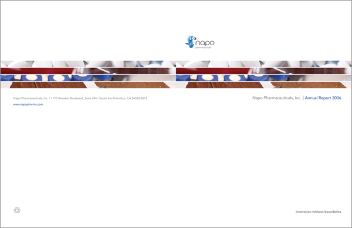
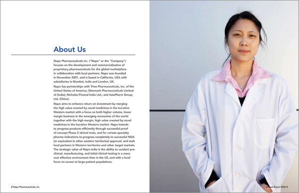
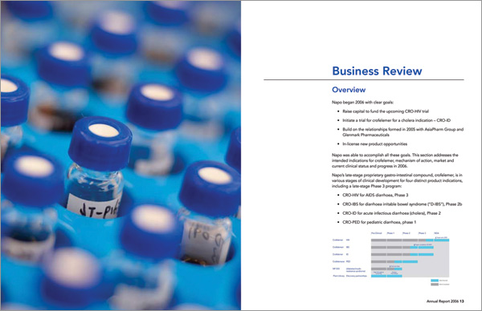
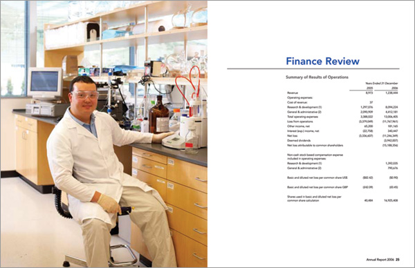
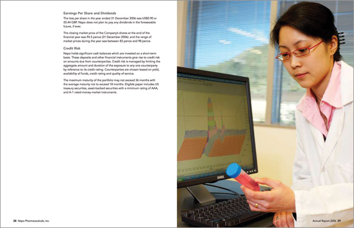
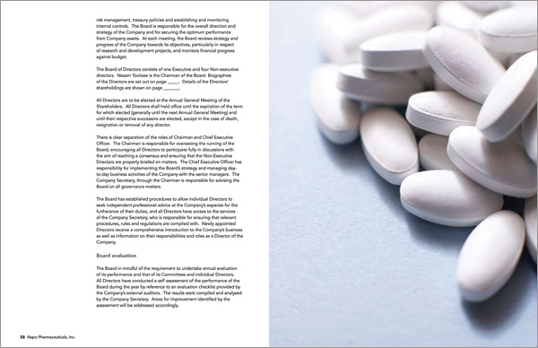
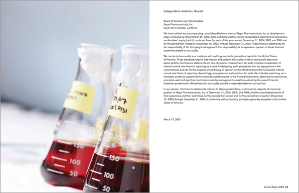

Napo is a pharmaceutical company based in South San Francisco. We art directed the photography and designed the company's annual report.
Design, print production, photography art direction






